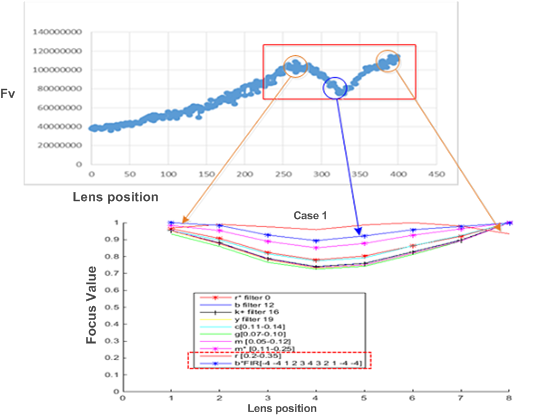
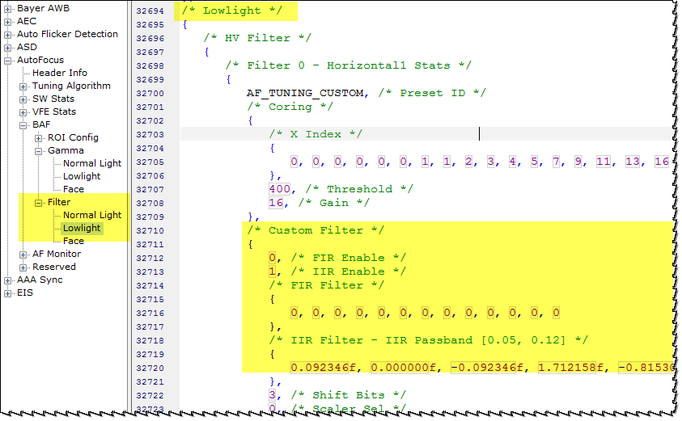
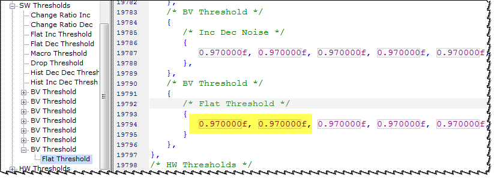

Adjust the AF filter
To prevent the false peak, use a high frequency band pass filter [0.2, 0.35] in a low light condition to flatten the FV curve for a spotlight scene.

To prevent a false peak, change the AF filter in a low light condition to a high frequency BPF [0.2, 0.35] using these steps:
- In the Chromatix tool, on the AF Tuning tab, click
Edit Header
 .
. - Select Header type 3A and navigate to AutoFocus > Tuning Algorithm > Lowlight Gain Threshold.
- Verify the current setting of the low_light_gain_th and adjust if needed.
- In the header editor, navigate to AutoFocus > BAF > Filter > Lowlight.
 - Set the FIR enable and IIR enable parameters as applicable.
- Set the FIR Filter and IIR Filter
settings using the following guidelines:
- FIR only
[0,-4,-4,1,2,3,4,3,2,1,-4,-4,0]
- FIR only
- IIR only BPF IIR [0.2,
0.35]
[0.1226000, 0, -0.1226000, 1.3642469, -0.75484900, 0.33660000, 0, -0.33660000, 0.8725360, -0.68906000]
Adjust flat ratio tuning
If changing the AF filter tuning does not result in a true peak, use these steps to adjust flat ratio tuning to make a spotlight scene considered a flat scene. This adjustment results in a more accurate and consistent AF result.
- In the Chromatix tool, on the AF Tuning tab, click
Edit Header .
- Select Header type 3A and navigate to AutoFocus > Tuning Algorithm > Single > SW Thresholds > BV Threshold > Flat Threshold.
- Reduce the flat threshold for the low BV entry (low light condition).
- Check to see if the flat scene stays in a hyper focus position.
If these adjustments do not resolve the spotlight issue, turn on the spotlight detection assisted AF feature.